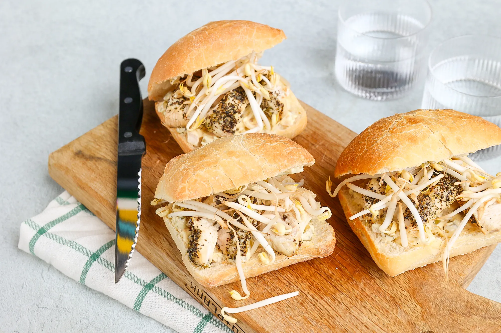

Hotdogs uit de oven

Ingrediënten
- 1 focaccia of 2 Italiaanse bollen
- 250 gr kipfilet
- 3 tl Italiaanse kruiden
- 2 el olijfolie
- 10 gr augurken
- 1/2 ui
- 2 el g mayonaise
- 2 tl g creme fraiche
- 1 tl grove mosterd
- 1 tl cajun kruiden
- 10 g taugé
Bereidingen
-
Snij de kipfilet in plakjes. Smeer de kip in met de olijfolie en de
Italiaanse kruiden.
-
Verwarm de oven voor op 180 graden en laat de kip vervolgens in 40
minuten gaar worden.
De spread
- Snijd de ui en augurk in kleine stukjes.
-
Meng in een kom de mayonaise, crème fraîche, mosterd, cajun kruiden,
augurk en ui.
-
Snijd de broodjes open en besmeer de onderste helft met de spread.
- Verdeel de kipfilet over de spread.
- Verdeel de taugé over de kipfilet.